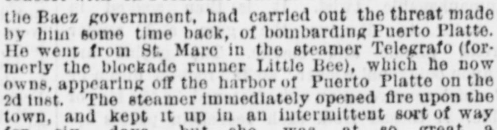

Gen. [Luperon, who is acting in concert with ex-President Cabral for the overthrow of the Baez governmentEl general Luperón, que actúa de concierto con el expresidente Cabral para deponer al gobierno de Báez
New-York Tribune. New York [N.Y.], June 30, 1869. Page 1. Published by New York Tribune. A daily newspaper, 1866–1924.New-York Tribune. New York [N.Y.], 30 de junio de 1869. Página 1. Publicado por New York Tribune. Periódico diario, 1866–1924. View the originalVer el original

Gen. Luperón, acting with ex-President Cabral to overthrow the Báez government, used his steamer Telegrafo to bombard Puerto Plata intermittently for six days starting June 2. Because the vessel maintained a distant position, no damage, property destruction, or loss of life occurred, and the town's forts were unable to return fire before the steamer departed westward on the 8th. Meanwhile, intelligence indicated that Cabral had begun active military operations in the south-western territory as part of a coordinated plan to force Báez to divide his forces.El general Luperón, obrando en concierto con el expresidente Cabral para deponer al gobierno de Báez, empleó su vapor Telégrafo para cañonear intermitentemente a Puerto Plata durante seis días a partir del 2 de junio. Debido a que el buque conservó una prudente distancia de tiro, no se registraron daños materiales ni pérdidas de vidas, y los fuertes de la plaza no pudieron ripostar el fuego antes de que la nave partiese hacia el oeste el día 8. En tanto, informes confidenciales señalaban que Cabral había iniciado activas operaciones bélicas en el sudoeste como parte de un plan sincronizado para forzar a Báez a fraccionar sus tropas.
FULL TEXT:TEXTO COMPLETO:
New-York Tribune June 30, 186930 de junio de 1869
ST. DOMINGO.SANTO DOMINGO.
LUPERON DECLARED A PIRATE—FAVORABLE REPORTS OF BAEZ.LUPERÓN DECLARADO PIRATA—INFORMES FAVORABLES DE BÁEZ.
ST. DOMINGO, June 20, via HAVANA, June 29.—The Dominican Senate has declared Gen. Luperon and the crew of the steamer Telegrafo pirates. The people of Puerto Plata and Samana refused to receive Luperon, who has issued a proclamation of rebellion.SANTO DOMINGO, 20 de junio, vía LA HABANA, 29 de junio.—El Senado dominicano ha declarado piratas al general Luperón y a la tripulación del vapor Telegrafo. El pueblo de Puerto Plata y Samaná se negó a recibir a Luperón, quien ha emitido una proclama de rebelión.
The Dominican troops remain faithful to President Baez. The Boletin Official reports that the Provinces of Cibas, Seybro, and Samana are tranquil. More troops are needed, but large numbers of citizens are offering their services to defend the frontier.Las tropas dominicanas permanecen fieles al presidente Báez. El Boletin Official informa que las provincias de Cibas, Seybro y Samaná están tranquilas. Se necesitan más tropas, pero gran número de ciudadanos están ofreciendo sus servicios para defender la frontera.
BOMBARDMENT OF PUERTO PLATTE—FAILURE OF THE ATTACK.BOMBARDEO DE PUERTO PLATTE—FRACASO DEL ATAQUE.
We are in receipt of advices from Puerto Platte to the 8th inst. Gen. Luperon, who is acting in concert with ex-President Cabral for the overthrow of the Baez government, had carried out the threat made by him some time back, of bombarding Puerto Platte. He went from St. Marc in the steamer Telegrafo (formerly the blockade runner Little Bee), which he now owns, appearing off the harbor of Puerto Platte on the 2d inst. The steamer immediately opened fire upon the town, and kept it up in an intermittent sort of way for six days, but she was at so great a distance from the town, and the shots were so badly aimed that no damage was done to the place, no property destroyed, and no lives lost. Owing to the position taken up by the Telegrafo the forts could not possibly reply to her fire, and as she maintained that position during the whole of the bombardment, the Dominicans had no chance of getting a shot at her. On the morning of the 8th inst. she ceased firing and shortly afterward steamed away in a westerly direction—it was supposed for St. Marc. Luperon had expected that his arrival before Puerto Platte in this vessel would have been the signal for a revolutionary uprising in the town and surrounding country, but in this he was disappointed.Hemos recibido noticias de Puerto Platte hasta el 8 del corriente. El general Luperón, que actúa en concierto con el ex Presidente Cabral para el derrocamiento del gobierno de Báez, había llevado a cabo la amenaza hecha por él hace algún tiempo, de bombardear Puerto Platte. Fue desde St. Marc en el vapor Telegrafo (antes el forzador del bloqueo Little Bee), que ahora es de su propiedad, apareciendo frente al puerto de Puerto Platte el 2 del corriente. El vapor abrió fuego inmediatamente sobre el pueblo, y lo mantuvo de manera intermitente durante seis días, pero estaba a tan gran distancia del pueblo, y los disparos fueron tan mal dirigidos que no se hizo daño alguno al lugar, no se destruyó propiedad alguna, y no se perdieron vidas. Debido a la posición tomada por el Telegrafo, los fuertes no pudieron en modo alguno responder a su fuego, y como mantuvo esa posición durante todo el bombardeo, los dominicanos no tuvieron oportunidad de dispararle. En la mañana del 8 del corriente cesó el fuego y poco después se alejó a vapor en dirección occidental—se supuso que hacia St. Marc. Luperón había esperado que su llegada ante Puerto Platte en este buque habría sido la señal para un levantamiento revolucionario en el pueblo y el país circundante, pero en esto quedó decepcionado.
Intelligence had been received at Puerto Platte that Cabral had commenced active military operations in the south-western part of the Dominican territory. It was understood that Luperon should operate in the north, while Cabral should confine himself to the south, it being hoped that by thus compelling Baez to divide his forces a more easy conquest would be gained over him by the revolutionary chiefs.Se habían recibido noticias en Puerto Platte de que Cabral había comenzado operaciones militares activas en la parte suroeste del territorio dominicano. Se entendía que Luperón debía operar en el norte, mientras que Cabral debía limitarse al sur, esperándose que obligando así a Báez a dividir sus fuerzas se obtendría una conquista más fácil sobre él por los jefes revolucionarios.
Trade was brisk at Puerto Platte, and American provisions were plentiful, especially flour. American lumber was also in good supply.El comercio estaba animado en Puerto Platte, y las provisiones estadounidenses eran abundantes, especialmente la harina. La madera estadounidense también tenía buen suministro.